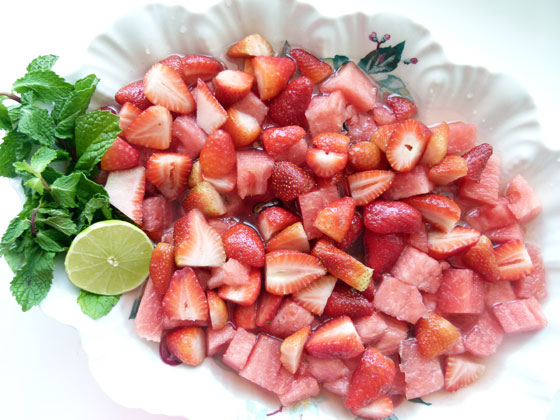
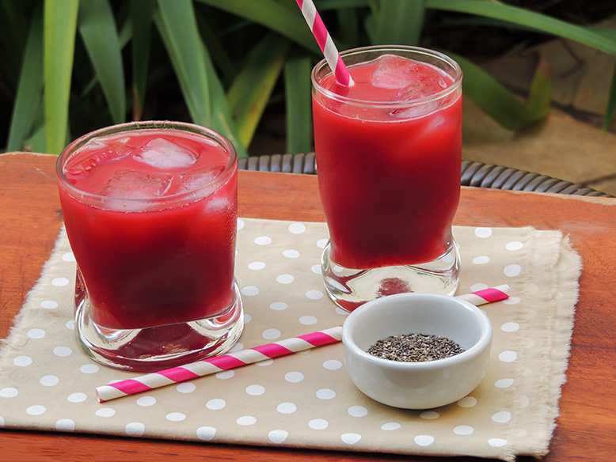
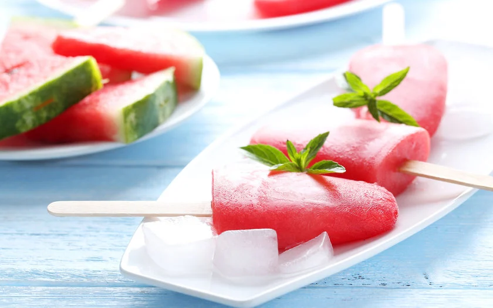

A melancia é uma fruta deliciosa por si só, porém, existem várias receitas que dão um toque especial no jeito de consumir esta fruta. Segue aqui três receitas fantásticas com melancia:
Numa pequena panela, ponha a agua, o açúcar, as raspas do limão, e as folhas de hortelã. Leve ao fogo médio e deixe ferver por 5 minutos. Retire do fogo, incorpore o suco do limão e deixe esfriar. A calda pode ser feita de véspera.
Lave os morangos e em seguida, corte os cabinhos. Parta os morangos maiores. Misture os morangos à melancia picada. Passe a calda pela peneira para retirar as folhas de hortelã e jogue nas frutas. Leve a salada à geladeira, bem coberta com filme plástico, por até uma hora antes de servir. Ou, deixe as frutas separadas da calda, na geladeira, e misture na hora de servir.
Esta receita rende aproximadamente 1 litro de suco.
Pique grosseiramente a melancia e coloque no liquidificador junto com os outros ingredientes. Bata bem. Sirva com bastante gelo. Uma opção é usar água filtrada e fazer gelinhos com a água de coco, se preferir. Não é necessário colocar açúcar, coloque se quiser.
Bata tudo no liquidificador. Depois despeje nas forminhas de picolé e leve ao freezer. Dica: você também pode fazer um picolé apenas de melancia, caso seja seu gosto.
